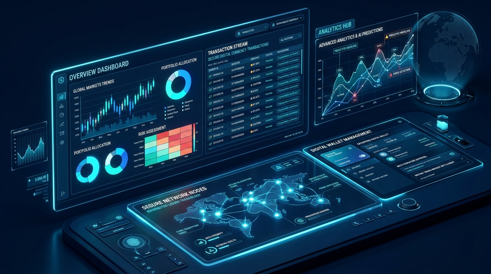

Banking & FinTech
Helping financial organizations modernize banking experiences, strengthen security, and build intelligent financial platforms.
We empower financial institutions, neo-banks, and wealth managers to navigate regulatory complexity, eliminate legacy core bottlenecks, and deliver hyper-personalized digital transactions.
Healthcare
Enabling healthcare organizations with secure digital platforms, connected patient experiences, intelligent data solutions, and efficient workflows.
From HIPAA-compliant clinical cloud platforms to AI-assisted diagnostic pipelines, we engineer resilient software architectures that protect sensitive health data and enhance patient care.

Manufacturing
Helping manufacturers connect operations, automate processes, and use real-time intelligence to create smarter and more efficient industrial environments.
We bridge operational technology (OT) with enterprise IT to unlock holistic industrial IoT telemetry, automated quality assurance, digital twin simulation, and resilient supply chain networks.
Retail & CPG
Creating connected commerce experiences that help retailers and consumer brands understand customers, optimize operations, and grow through digital innovation.
We engineer headless e-commerce architectures, AI recommendation engines, dynamic pricing frameworks, and real-time omnichannel inventory engines to maximize lifetime customer value.